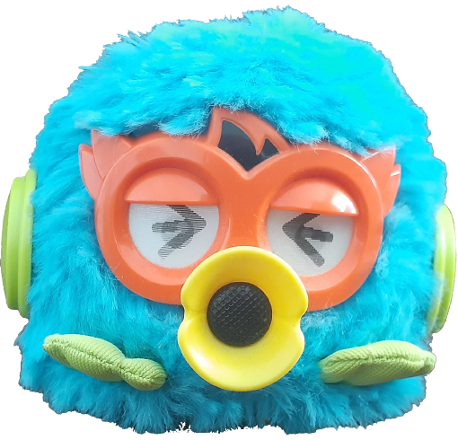
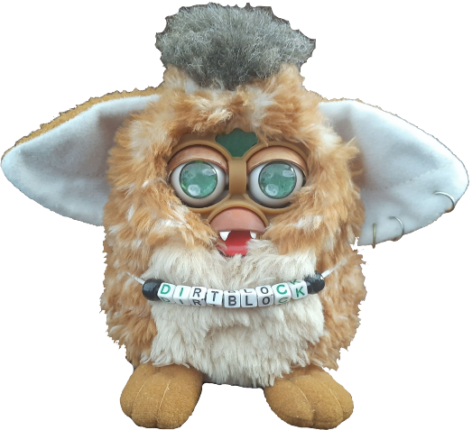
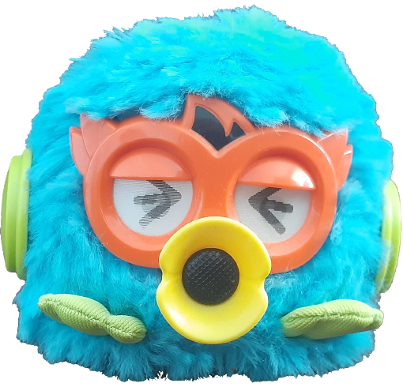
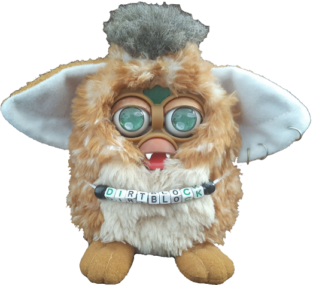
(in order of acquisition)
1998 furbies are my favourite they're so scrunkly
love-hate the 2005 ones cause they're nightmare looking but are also ugly in a cute way
you can figure out your furby's birthday using this guide
wishlist:
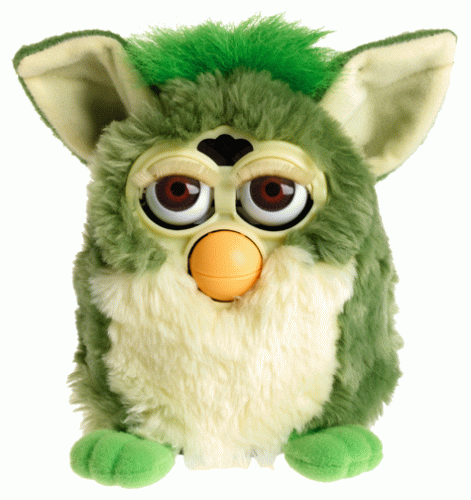 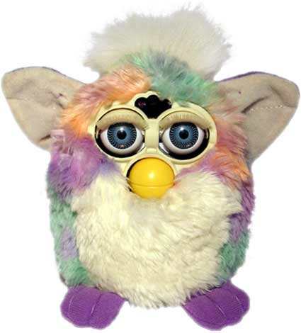 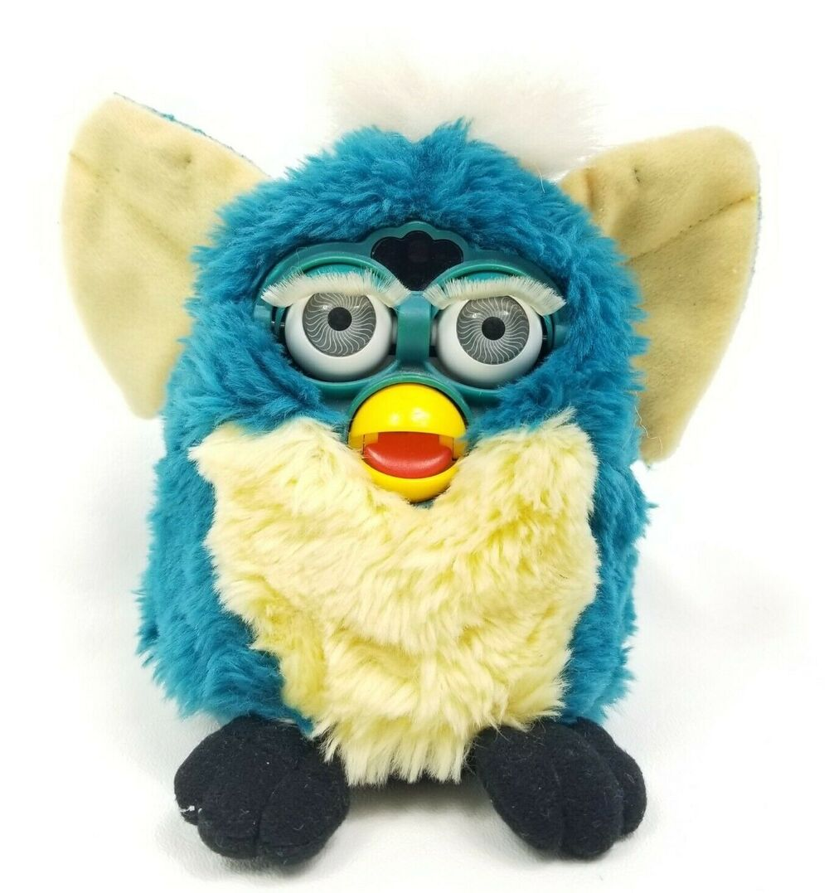 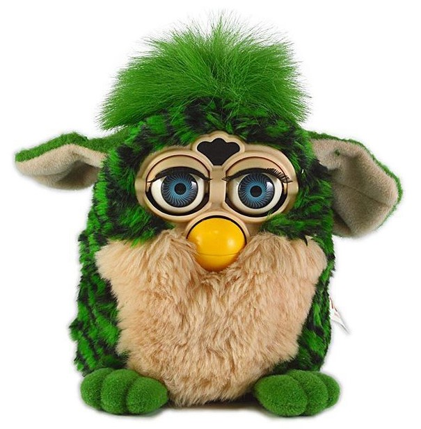 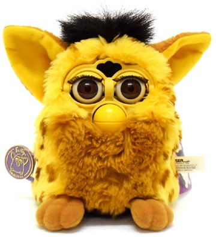 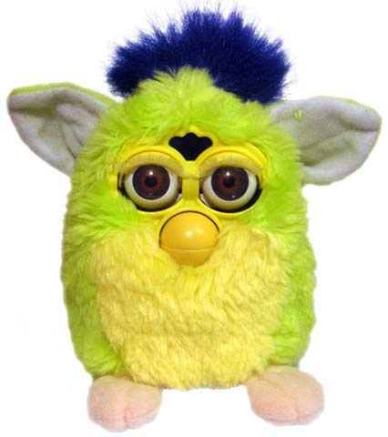
 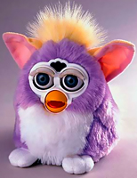
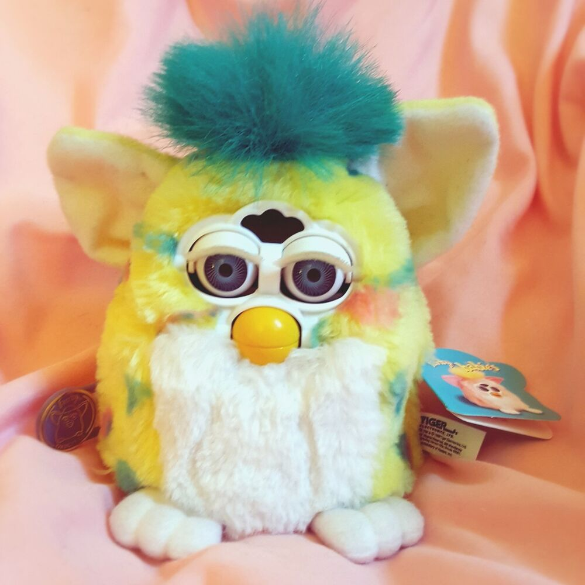
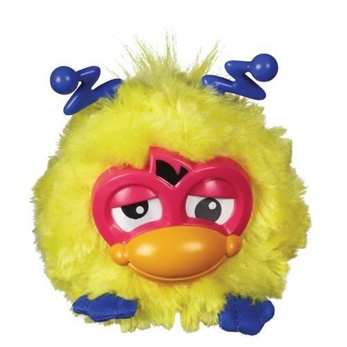
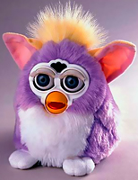
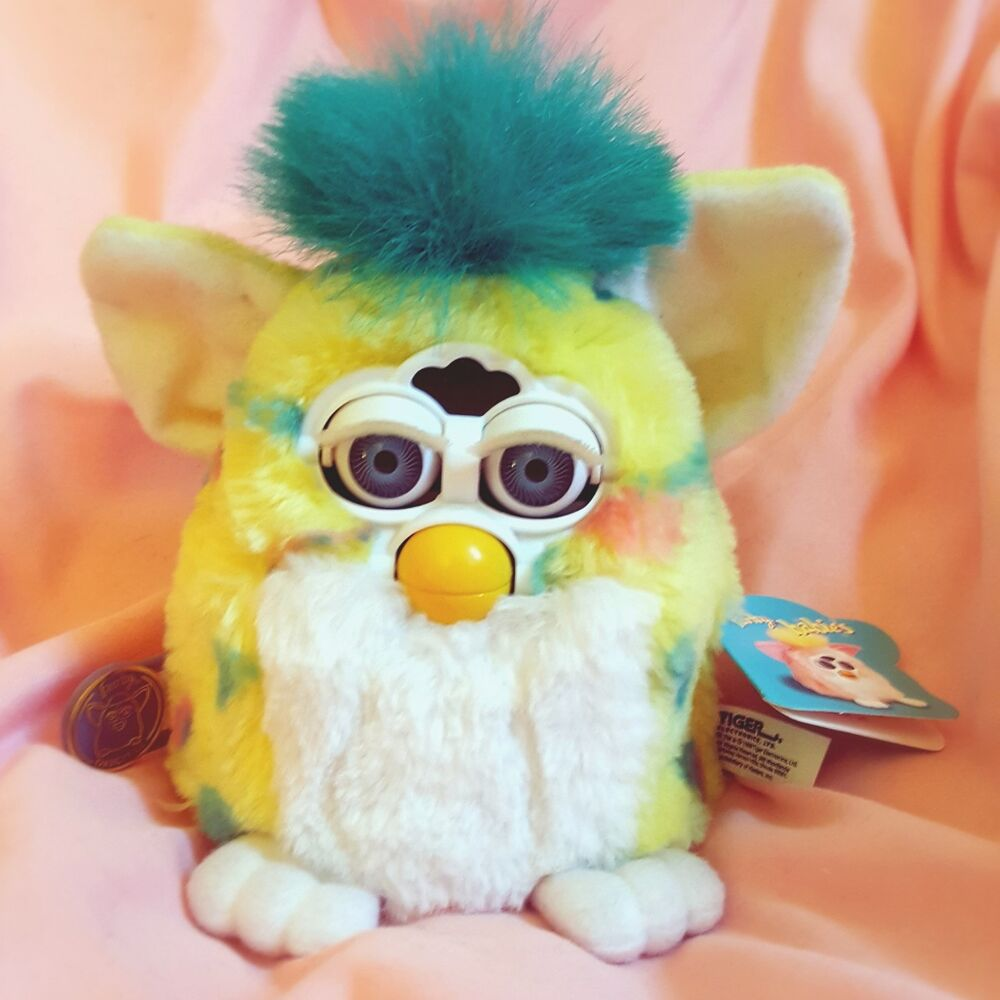
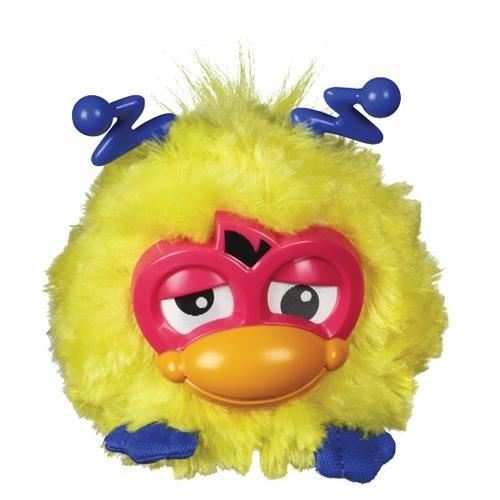